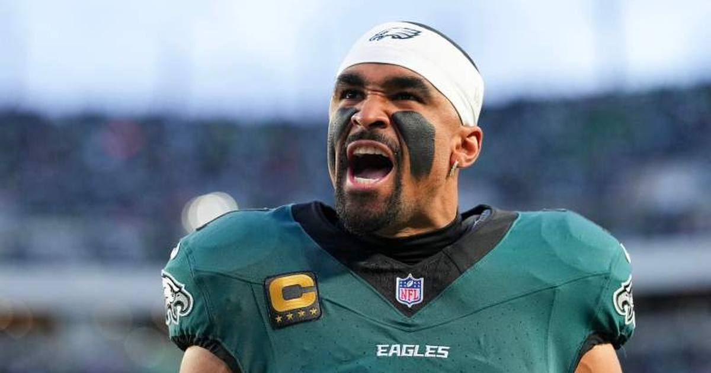

NFL Injury Flags: Hurts and McLaurin Out for the Season, Evans' Achilles Flares Up
A brutal Monday: Jalen Hurts was ruled out for the season with blood clots, Terry McLaurin tore his patellar tendon and is done for the year, Mike Evans exited with an Achilles flare-up, and the Giants' QB chaos deepened with Jaxson Dart done for the season.

Disclosure: this post contains affiliate links. I earn a commission on qualifying purchases.
Monday was a brutal day on the NFL injury front. Four names, four situations — and Tuesday's news made the worst-case McLaurin scenario official.
🚑 Jalen Hurts — out for the season (blood clots)
The biggest news: the Eagles quarterback was ruled out for the rest of the season Monday after doctors discovered blood clots in his lungs. Philadelphia has now lost four straight — its first such skid since 2020 — and will finish the season without its franchise QB. Rookie Tanner McKee is the next man up.
🚑 Terry McLaurin — torn patellar tendon, out for the season
The Commanders' longtime captain went down in a heap late in the first quarter against San Francisco — his left leg buckled on a non-contact route near the Washington sideline. His leg was placed in an air cast before he was carted off.
Tuesday's MRI confirmed the worst: a torn patellar tendon in his left knee. Head coach Dan Quinn announced McLaurin is done for the season and will have surgery in the coming days. McLaurin had caught a 27-yard pass on Washington's opening drive before the injury, and finishes the year with 15 catches for a team-leading 230 yards in five games.
The typical recovery timeline for the repair is 6–9 months — and the injury clouds his future in Washington: he's in year one of a three-year, $96M extension with cap hits of $34M and $39.5M ahead, and $5.35M of his 2027 salary goes fully guaranteed on April 1. Stefon Diggs slides into the WR1 role with rookie Antonio Williams, Treylon Burks, Dyami Brown and TE Chig Okonkwo absorbing the rest.
🚑 Mike Evans — Achilles flare-up (not expected to be long-term)
Evans left before halftime of the 49ers' win after his Achilles flared up, and he was ruled out for the remainder of the game. He'd been battling rib and Achilles issues coming in — and still put up 3 catches for 94 yards before exiting.
The encouraging word from Kyle Shanahan: it's Achilles tendinitis that flared up, and the team does not expect it to be a long-term problem. Given Evans' history — he played just eight games last year — 49ers fans can exhale slightly, but his status for Atlanta is worth watching.
🚑 Jaxson Dart — season-ending knee injury
The Giants' quarterback situation keeps getting worse. Dart suffered a season-ending knee injury back in Week 2, and the fallout is ongoing: head coach John Harbaugh benched Jameis Winston in Sunday's loss to the Saints and has yet to name a Week 7 starter between Winston and J.J. McCarthy. New York somehow still leads the NFC East at 3-2-1.
Also worth noting: the Giants lost edge rusher Brian Burns to a season-ending knee injury as well, and Commanders defensive tackle Javon Kinlaw left Monday's game with a knee injury.
Sources: theScore · USA Today: "Did Commanders lose battle to 49ers but prevail in bigger war?" · ClutchPoints: "Mike Evans shows classy gesture to Terry McLaurin after WR's injury" · Reuters · commanders.com
Watch
Source: Jalen Hurts expected to miss rest of season after blood clot scare (CBS Mornings)
CBS Mornings' report on Hurts' blood clot diagnosis — the most serious of Monday's injury news, with the Eagles QB expected to miss the rest of the season.
Gear up: Sports category post → [Fanatics](https://fanatics.93n6tx.net/WOLjqe): via Fanatics